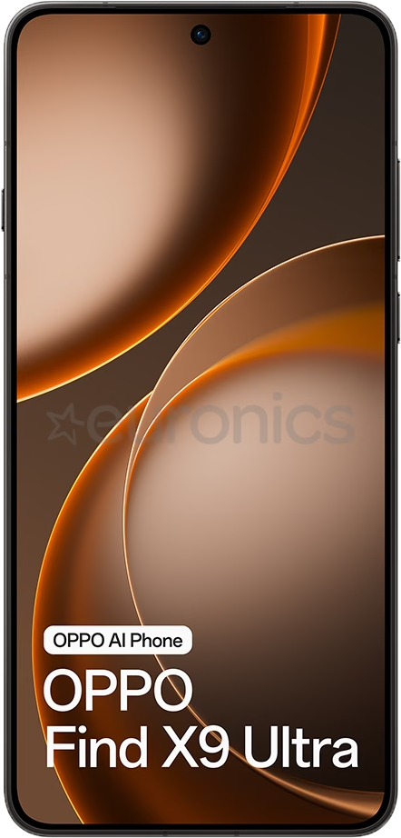
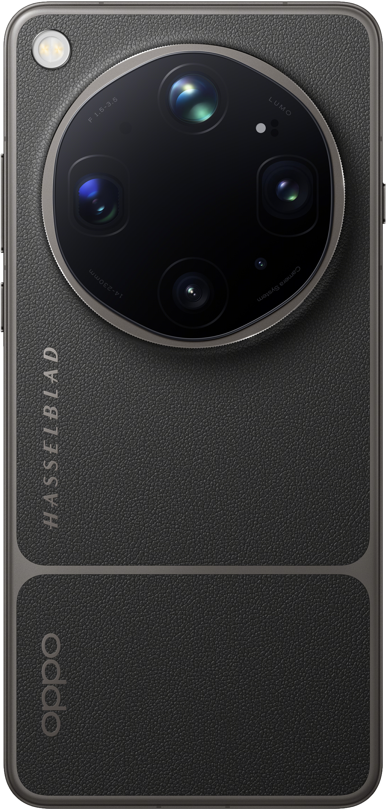
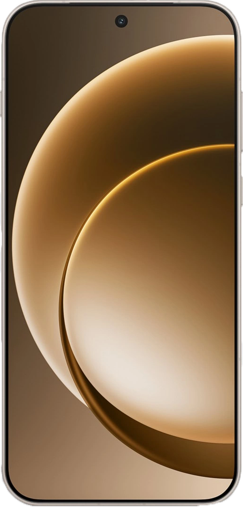
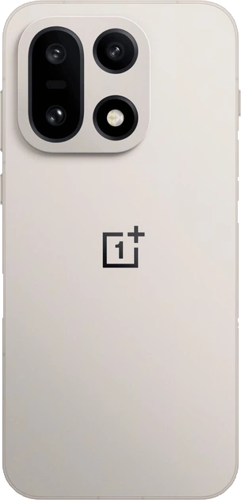
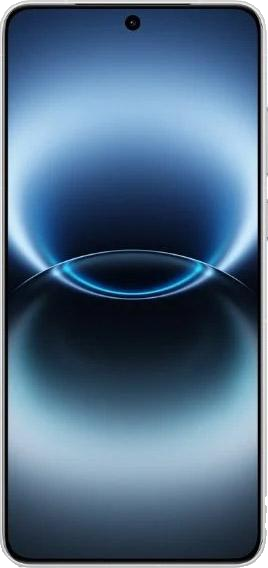
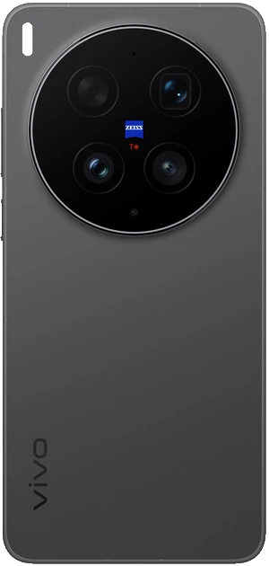

OPPO Find X9 Ultra
- 6.82'' AMOLED дисплей
- 1800 ніт яскравості
- Роздільна здатність 3168х1440
- Фронтальна камера - Samsung ISOCELL JN5 (50MP)

- Основна камера - Sony LYT-901 (200MP)
- Теле-фото камера - Omnivision OV52A (200MP)
- Теле-фото камера - Samsung S5KJN1 (50MP)
- Широкоформатна камера - Sony LYT-600(50MP)

OnePlus 15
- 6.78'' LTPO AMOLED дисплей
- 1800 ніт яскравості
- Роздільна здатність 2772x1272
- Фронтальна камера - Sony IMX709 (32MP)

- Основна камера - 50MP
- Теле-фото камера - 50MP
- Широкоформатна камера - 50MP

Vivo X300 Ultra
- 6.82'' AMOLED дисплей
- 4500 нітів яскравості
- Роздільна здатність 3168x1440
- Фронтальна камера - 50MP

- Основна камера - Sony LYT-901 (200MP)
- Теле-фото камера - 200MP
- Широкоформатна камера - Sony LYT-818 (50MP)
